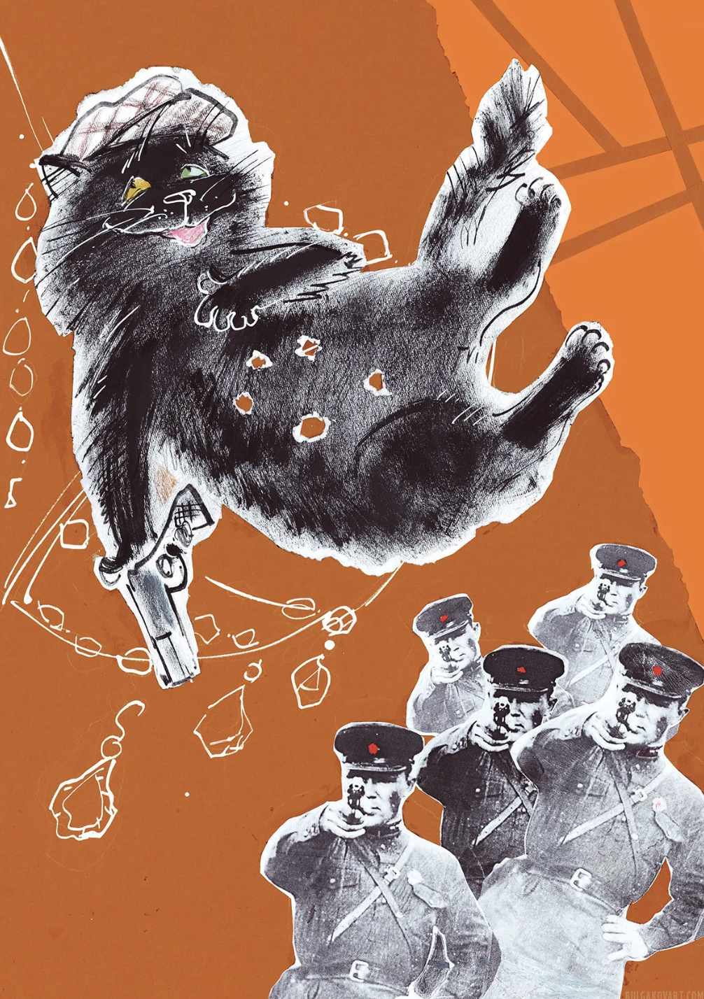
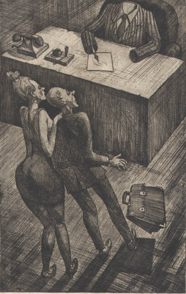

Modernist author deals with fragmented and unstable narrative but still is able to emerge as an omnipotent architect of the modernist novel. Here is an interesting example from chapter 28. "А sales clerk ... was waiting on the lilac client. With the sharpest of knives, much like the knife stolen by Matthew Levi, he was removing form a weeping, plump pink salmon its snake-like, silvery skin" (348-349). The chapter is set in Moscow but the knife is from a Jerusalem chapter. Only the modernist author, who puts together the entire complex novel, can humorously take a knife from Moscow and compare it to a knife stolen by the gospel writer from the Jerusalem section of the novel.

